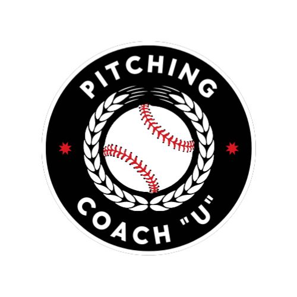
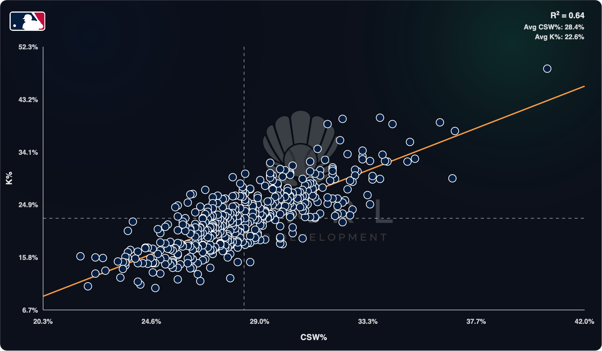

CSW%
WINS
AT-BATS.
Whiffs matter. But the pitchers who dominate also steal strikes without a swing.

WHAT DOES
CSW% MEASURE?
TOP 5
CSW% LEADERS.
CSW% AND K%
MOVE TOGETHER.

WHIFFS AND
CALLED STRIKES
BOTH WIN.
CALLED STRIKE
The hitter never offers. The pitch still wins.
WHIFF
The hitter offers and fails to make contact.
MORE TAKES.
Locate a pitch on the opposite side of the plate from its movement direction.
MOVE AWAY FROM THE LOCATION SIDE.
The pitch finishes arm side while its shape moves glove side.
Opposite movement and location lanes create more takes.
Rule of thumb—not an absolute. Count, hitter, pitch quality and sequencing still matter.
MORE SWINGS.
Locate a pitch on the same side of the plate as its movement direction.
MOVE TOWARD THE LOCATION SIDE.
The pitch finishes glove side and keeps moving glove side.
Matching movement and location lanes creates more swings.
Rule of thumb—not an absolute. Count, hitter, pitch quality and sequencing still matter.
TL;DR
The CSW playbook:
Think curveballs and sweepers.